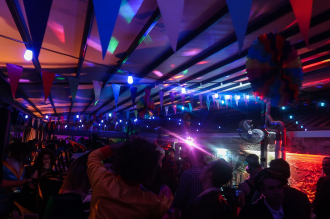

<!--#set var="title" value="Главная страница" -->
<!--#include virtual="/parts/head.html" -->

<main class="content">
    <div class="container">
        <div class="promodj">
            
            <div class="promodj__name">
                
            </div>
            <div class="promodj__info">
                <div class="promodj__description">The Legend of the underground music in the Story Club!</div>
                <div class="promodj__event-time">The party starts at 22:00, December 11th!
                    ‌Story Club. Kanari 16, Limassol</div>
            </div>
        </div>
        <div class="djs-list cols-3">
            <div class="djs-list__item">
                <div class="djs-list__picture-area b-circle">
                    <div class="djs-list__picture">
                        
                    </div>
                </div>
                <div class="djs-list__name">Denis A</div>
                <div class="djs-list__add-info">bedrock/tronic/dar</div>
            </div>
            <div class="djs-list__item">
                <div class="djs-list__picture-area b-circle">
                    <div class="djs-list__picture">
                        
                    </div>
                </div>
                <div class="djs-list__name">KOSTA KRITIKOS</div>
                <div class="djs-list__add-info">kesh</div>
            </div>
            <div class="djs-list__item">
                <div class="djs-list__picture-area b-circle">
                    <div class="djs-list__picture">
                        
                    </div>
                </div>
                <div class="djs-list__name">HIGHJACKS</div>
                <div class="djs-list__add-info">SIONA/MOVEMENT/LOWBIT</div>
            </div>
        </div>
        
        <h2 class="get-ready-h2">Get ready to experience the great undeground music in the heart of the Cyprus!</h2>
        <div class="text-center">
            <a href="" class="link-special link-special-big">but ticket</a>
        </div>
        <div class="offer-area offer-area_lvl1">
            <div class="offer-area__text">Online promo ticket</div>
            <ins><span>&euro;</span><span>20</span></ins> 
        </div>
        <div class="offer-area offer-area_lvl2">
            <div class="offer-area__text">At the entrance</div>
            <ins><span>&euro;</span><span>35</span></ins> 
        </div>
        <div class="offer-area offer-area_lvl3">
            <div class="offer-area__text">VIP (A seat at the table)</div>
            <ins class="def-bg2"><span>&euro;</span><span>100</span></ins> 
        </div>
        <div class="about flex">
            <div class="about__picture-area">
                <div class="about__picture-item about__picture_main-item">
                    <div class="about__picture about__picture_main circle-crop" style="background-image:url(img/aboutdj_1.jpg)"></div>
                </div>
                <div class="about__picture-item">
                    <div class="about__picture circle-crop" style="background-image:url(img/aboutdj_2.jpg)"></div>
                </div>
                <div class="about__picture-item">
                    <div class="about__picture circle-crop" style="background-image:url(img/aboutdj_3.jpg)"></div>
                </div>
            </div>
            <div class="about__text-area">
                <h3 class="def-bg2">About TIMO MAAS</h3>
                <p>Timo Maas has been on a 30-year quest to deliver his musical wizardry to the world. In fact, music is such an intrinsic part of his DNA that it’s one of his main modes of communication. From a residency at the groundbreaking Circoloco at DC10 in Ibiza, where he has been entrenched for over 15 years, to tours around Europe and the rest of the world, Timo Maas maintains a high level of performance. The visionary German also dedicates his time to conjuring up fresh new productions in his studio. His international recognition began with his seminal remix of ‘Dooms Night’ by Azzido Da Bass. Adopted by the UK’s garage scene, it launched him on to the world stage and he was soon being courted by a plethora of superstars from Madonna to Depeche Mode and Fatboy Slim to Muse.</p>
                <p>Never looking to the past, always in the here and now. From his formative years, in a small town called Bückeburg, up to today, Timo Maas has retained a love and passion for making and playing music that is indelibly etched into his psyche. It makes him the man he is today; driven, positive, infinitely creative and full of magic.</p>
            </div>
        </div>
        
        <div class="cuts">
            <h2>What kind of music TIMO MAAS makes</h2>
            
        </div>

        <div class="aboutv2 flex">
            <div class="aboutv2__text-area">
                <h3 class="def-bg2">About the Agora
                    Rooftop Bar</h3>
                <p>The renovated market attracts audiences with its architectural charm infused by a touch of modernity.</p>
                <p>Agora focuses on giving new life to one of the most historic landmarks in the heart of Limassol’s old town.</p>
            </div>
            <div class="aboutv2__picture">
                <div class="b-rect b-rect-left"></div>
                <div class="b-rect b-rect-right"></div>
            </div>
        </div>
        
        <div class="story">
            <h2>Story Club on the map</h2>
            <div class="story__wrap flex">
                <div class="map b-rect-big">
                    <iframe src="https://www.google.com/maps/embed?pb=!1m18!1m12!1m3!1d205.07195081496178!2d33.04251663194462!3d34.67613289642117!2m3!1f0!2f0!3f0!3m2!1i1024!2i768!4f13.1!3m3!1m2!1s0x14e7330378cd52e5%3A0xa2b40ac16b76ff05!2sStory%20Club!5e0!3m2!1sru!2sru!4v1653302563327!5m2!1sru!2sru" width="100%" height="350" style="border:0;" allowfullscreen="" loading="lazy" referrerpolicy="no-referrer-when-downgrade"></iframe>
                </div>
                <div class="story__address flex">
                    <span class="story__address-icon"></span>
                    <address>Story Club <br>
                        Kanari 16,&nbsp;Limassol</address>
                    <a href="" class="link-special link-special-big">but ticket</a>
                    <div class="offer-area offer-area_lvl1">
                        <div class="offer-area__text">Online promo ticket</div>
                        <ins><span>&euro;</span><span>20</span></ins> 
                    </div>
                    <div class="offer-area offer-area_lvl2">
                        <div class="offer-area__text">At the entrance</div>
                        <ins><span>&euro;</span><span>35</span></ins> 
                    </div>
                    <div class="offer-area offer-area_lvl3">
                        <div class="offer-area__text">VIP (A seat at the table)</div>
                        <ins class="def-bg2"><span>&euro;</span><span>100</span></ins> 
                    </div>
                </div>
            </div>
        </div>
        <div class="faq-area flex">
            <h3 class="def-bg2">faq</h3>
            <p class="faq-area_p1">If you have any questions you can write us on WhatsApp, and we will be happy to answer them.
            </p>
            <a href="/" class="link-specialv2 link-specialv2_whatsapp">Write to us on WhatsApp</a>
            <a href="/" class="link-specialv2"><span class="phone-icon">Call</span></a>
            <p class="faq-area_p2">Sign up for this event on Facebook to see how many people will go and if your friends will be there</p>
            <a href="/" class="link-specialv3"><span class="fb-icon">Find us on Facebook</span></a>
        </div>
        <h2 class="content__subtitle">Swiper v7</h2>
        <div class="swiper">
            <div class="swiper-wrapper">
                <div class="swiper-slide">Slide 1</div>
                <div class="swiper-slide">Slide 2</div>
                <div class="swiper-slide">Slide 3</div>
            </div>
            <!-- /.swiper-wrapper -->

            <!-- If we need pagination -->
            <div class="swiper-pagination"></div>

            <!-- If we need navigation buttons -->
            <div class="swiper-button-prev"></div>
            <div class="swiper-button-next"></div>
        </div>
        <!-- /.swiper -->
    </div>
    <!-- /.container -->
</main>
<!-- /.content -->
	
<!--#include virtual="/parts/footer.html" -->